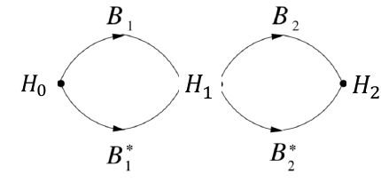
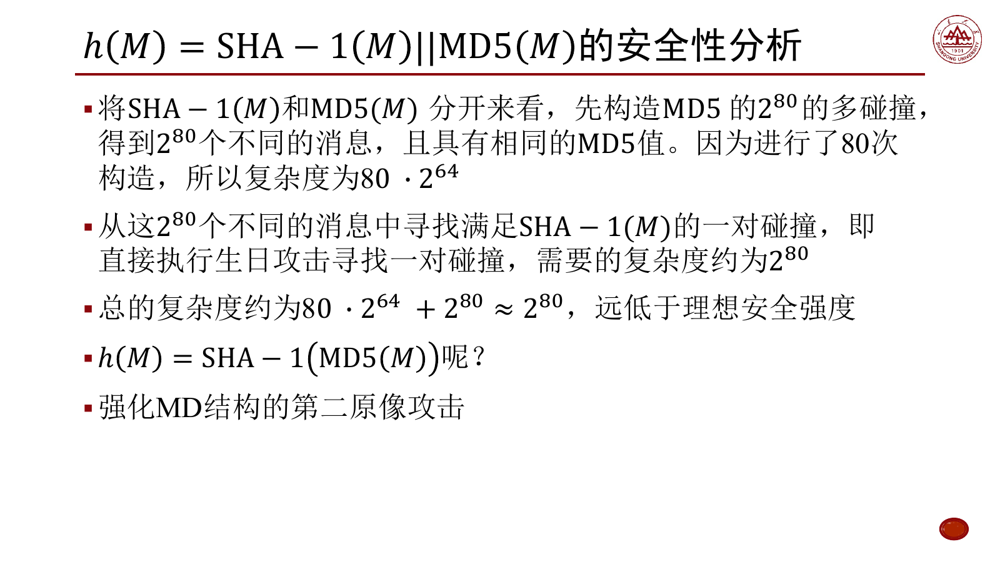
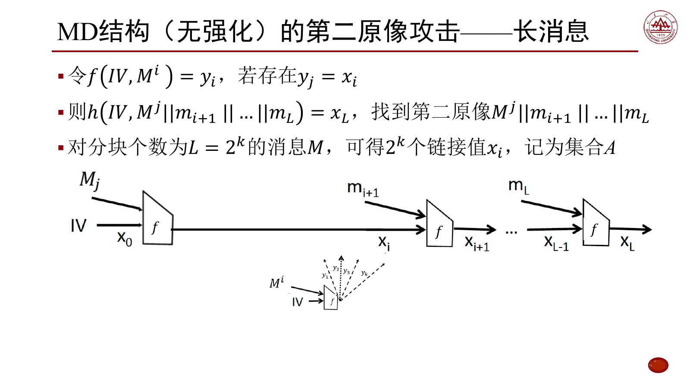
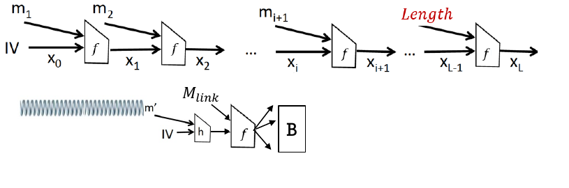

MD 结构的第二原像攻击¶
来源：
密码分析学 / notes/07-杂凑函数/第二原像攻击.md
给定消息 \(M\)，第二原像攻击要找到 不同的消息 \(M'\ne M\)，使 \(h(M')=h(M)\)。攻击者不能自己任选两条消息，因此它与寻找任意一对碰撞不同。对理想 \(n\) 位杂凑函数，通常需要约 \(2^n\) 次试验才能找到给定消息的第二原像。
本节利用 Merkle–Damgård（MD）迭代结构分析长消息。下面用 \(f\) 表示压缩函数，链接值为 \(n\) 位，消息分组为 \(b\) 位：
每次迭代只取决于当前链接值和当前分组。一旦两条计算路径到达同一链接值，之后输入完全相同的分组时，状态就会一直相同。相同的后续处理包括相同的填充及长度编码。
可以把攻击想成先找到一条不同的路径，让它在某个中间状态与目标路径汇合；汇合后再走相同的后缀。攻击需要回答三个问题：怎样到达同一状态、怎样控制消息长度、需要多少次压缩计算。
先理解多碰撞¶
从相同状态 \(H_0\) 找到两个不同分组 \(B_1,B_1^*\)，使其输出都为 \(H_1\)；再从 \(H_1\) 找到两个分组 \(B_2,B_2^*\)，使其输出都为 \(H_2\)。两级各选一种，共得到四个等长消息，都到达 \(H_2\)：

图来自第 12.2 节课件第 4 页。以此类推，找到 \(t\) 级独立的分组碰撞即可组合出 \(2^t\) 条消息。若每级压缩函数碰撞采用生日搜索，工作量约为 \(t2^{n/2}\) 次压缩计算，而非分别生成 \(2^t\) 条消息所需的计算量。这些消息等长，追加相同填充后即可得到完整杂凑函数的多碰撞。
为什么两个两碰撞可以组成四碰撞？¶
第一级从同一个 \(H_0\) 出发，找到两个不同的分组 \(B_1,B_1^*\)：
第二级只需要从同一个 \(H_1\) 再找一对 \(B_2,B_2^*\)，使它们都到达 \(H_2\)。因此下列四条消息都走到 \(H_2\)：
每一级的两种选择都能与其他级组合：\(t\) 级就有 \(2^t\) 种等长路径。每一级只需做一次普通碰撞搜索；链值是 \(n\) 比特时，每次搜索约 \(2^{n/2}\) 次压缩计算，故 \(t\) 级总共约 \(t2^{n/2}\) 次。
这里 \(t2^{n/2}\) 是构造可组合路径的成本；如果要求逐条输出全部 \(2^t\) 条消息，输出本身还需要相应的时间和空间。
应用：SHA-1 和 MD5 拼接的碰撞¶

设
要找到 \(M\ne M'\) 使 \(h(M)=h(M')\)，两部分都必须相同：
课件的思路是：先构造一大批 MD5 相同的消息，再在这批消息中找 SHA-1 碰撞。
第一步：构造 \(2^{80}\) 条 MD5 多碰撞消息¶
MD5 的链值为 128 位。利用上一节的逐级构造，在第 \(i\) 级从同一个链值 \(H_{i-1}\) 出发，找两个不同消息块 \(B_i,B_i^*\)，使
做 80 级，每一级二选一，可以组合成 \(2^{80}\) 条不同的 80 块消息。它们经过所有消息块后到达同一个 MD5 链值，且长度相同，最终填充也相同，所以最终 MD5 值都相等。
采用生日搜索估算，每一级碰撞约需 \(2^{128/2}=2^{64}\) 次 MD5 压缩函数计算，80 级的构造成本约为
保存每一级的两个块，就能用 80 次二选一描述全部 \(2^{80}\) 条消息；这个数是多碰撞结构的构造成本。下一步仍要读取或生成候选消息并计算 SHA-1。
第二步：在这些消息中搜索 SHA-1 碰撞¶
对多碰撞中的消息计算 SHA-1，寻找两个相同输出。SHA-1 摘要为 160 位，生日攻击所需的候选数约为
找到不同消息 \(M_i,M_j\) 满足 \(\operatorname{SHA1}(M_i)=\operatorname{SHA1}(M_j)\) 时，它们已经具有相同 MD5 值，因此
在 SHA-1 输出近似独立均匀的模型下，检查 \(2^{80}\) 条消息至少出现一次碰撞的概率约为 \(1-e^{-1/2}\approx39.3\%\)。没有命中时可以增加碰撞级数、扩大候选集合；例如 81 级提供 \(2^{81}\) 条候选，对应的概率约为 \(1-e^{-2}\approx86.5\%\)。
第三步：合计时间与存储¶
课件分别按 MD5 压缩函数计算和 SHA-1 完整消息求值计数：
这里 \(80\cdot2^{64}\approx2^{70.32}\)，因此 SHA-1 搜索是主项。直接存表搜索需要约 \(2^{80}\) 条 SHA-1 摘要及对应消息选择信息，并需要相应的表操作。
两项的单位不同：每条候选消息由 80 个分组构成。如果每条 SHA-1 都从头计算，约需 \(80\cdot2^{80}\) 次分组压缩；按二叉路径遍历并复用共同前缀的 SHA-1 状态，可以把处理所有候选的压缩调用压到 \(O(2^{80})\) 量级。最终仍须处理搜索到的候选和查表。
与理想杂凑及嵌套构造对比¶
拼接输出长度为 \(160+128=288\) 位。一个理想的 288 位随机杂凑函数，普通生日碰撞工作量约为 \(2^{144}\)；课件的结构攻击量级约为 \(2^{80}\)。
如果改为嵌套构造
只要找到 \(\operatorname{MD5}(M)=\operatorname{MD5}(M')\)，外层 SHA-1 的输入相同，输出必然相同。因此按 MD5 的通用生日估计，约 \(2^{64}\) 次 MD5 求值就能找到 \(g\) 的碰撞。
| 构造 | 要得到碰撞 | 课件的通用生日模型 |
|---|---|---|
| \(\operatorname{SHA1}(M)\parallel\operatorname{MD5}(M)\) | 两种摘要同时相同 | MD5 多碰撞加 SHA-1 搜索，约 \(2^{80}\) 量级 |
| \(\operatorname{SHA1}(\operatorname{MD5}(M))\) | 内层 MD5 相同即可 | 约 \(2^{64}\) 次 MD5 求值 |
| 理想 288 位杂凑 | 找任意一对相同输出 | 约 \(2^{144}\) 次求值 |
这些是课件用于比较结构的通用生日模型，计算单位与概率按上面说明；MD5 和 SHA-1 的具体结构还可用于设计专门攻击。
没有长度强化时：利用多个目标中间值¶
这类攻击针对一条已给定的长消息 \(M\)，寻找 \(M'\ne M\) 使 \(h(M')=h(M)\)。思路是先让新消息到达原消息的某个中间链值，再接上原消息对应的后缀。

图源：《第12.2节 第二原像攻击》，第 7 页。
1. 课件中的符号与原消息路径¶
把原消息分为 \(L\) 个分组：
原消息的每一步由压缩函数计算：
| 符号 | 含义 |
|---|---|
| \(m_i\) | 已给定消息 \(M\) 的第 \(i\) 个分组 |
| \(x_i\) | 从 \(IV\) 开始处理完 \(m_i\) 后的中间链值 |
| \(M^j\) | 攻击者试验的第 \(j\) 个候选分组；上标只是编号 |
| \(y_j\) | 候选分组的输出 \(f(IV,M^j)\) |
| \(i,j\) | \(i\) 是原路径中的位置，\(j\) 是候选分组编号 |
| \(x_L\) | 原路径处理到最后的链值 |
原消息与压缩函数都是已知的，所以可以从 \(IV\) 自己算出每个 \(x_i\)。课件图中的 \(M_j\) 与式子的 \(M^j\) 都表示候选分组；下文统一写 \(B\)。
原消息路径：
m₁ m₂ mᵢ mᵢ₊₁ mL
↓ ↓ ↓ ↓ ↓
IV ───→ f ──→ x₁ ──→ f ──→ x₂ ──→ ... ──→ xᵢ ─────→ ... ──────────→ xL
下文用课件的模型：对完整分组计算迭代值；若另有末尾处理，两条消息采用相同的后续填充分组。\(x_L\) 表示处理到该共同终点的状态。
2. 找到一个连接点，再接原消息的后缀¶
不断选新的候选分组 \(B\)，从 \(IV\) 计算
只要某次命中原路径的一个状态，即
就可以把 \(B\) 接到原消息 \(x_i\) 后面的分组之前：
为什么之后一定一样？两条路径进入后缀时状态同为 \(x_i\)，下一块同为 \(m_{i+1}\)，所以都算出
继续处理相同的后缀，状态依次都为 \(x_{i+2},\ldots,x_L\)。最后检查 \(M'\ne M\)，并对两条完整消息计算杂凑值验证。
具体例子： \(M\) 有 8 个分组，试出 \(f(IV,B)=x_5\)，则
原消息处理 5 块到 \(x_5\)；新消息处理一块 \(B\) 就到 \(x_5\)。之后两边同样处理 \(m_6,m_7,m_8\)。新消息共 4 块，原消息 8 块，因而二者不同。若命中第一个状态，需排除 \(B=m_1\) 这种得到原消息本身的平凡情况。
3. 为什么长消息会减少搜索？¶
设链值为 \(n\) 比特，共有 \(2^n\) 种可能状态。如果只指定要命中一个 \(x_i\)，一次随机试验的成功概率约为 \(2^{-n}\)。
长消息给出了很多可用的目标：
只要 \(y=f(IV,B)\) 命中其中任意一个，就可以接相应后缀。设 \(A\) 中有 \(D\) 个不同且可用的状态，随机输出模型下，一次试验的命中概率是
课件取 \(L=2^k\)，并按约有 \(D=2^k\) 个不同目标估计：
若原路径中状态重复，按不同的可用状态数 \(D\) 计算。搜索需要足够多可用的候选分组；若一次命中只产生原消息本身，就继续寻找非平凡命中。
数字例子： \(n=16\)、\(k=4\)，目标消息有 \(L=2^4=16\) 个分组。假设它提供 16 个不同可用状态，则一次试验的命中概率为 \(16/2^{16}=1/4096=2^{-12}\)，期望约试 \(2^{12}=4096\) 个候选分组。
“期望 4096 次”是平均工作量。在独立试验近似下，试 \(q\) 次至少命中一次的概率为 \(1-(1-p)^q\)；取 \(q\approx1/p\) 时约为 \(1-e^{-1}\approx63.2\%\)。若仍未命中，就继续试验。
4. 把算法和复杂度对应起来¶
- 计算目标路径： 顺序处理 \(M\) 的 \(L=2^k\) 个分组，得到并保存各个 \(x_i\) 和对应位置 \(i\)。
- 试验候选块： 选一个 \(B\)，计算 \(y=f(IV,B)\)。
- 查目标表： 若 \(y=x_i\)，取出该位置；否则继续试其他候选块。
- 构造并验证： 输出 \(B\parallel m_{i+1}\parallel\cdots\parallel m_L\)，确认它与 \(M\) 不同且最终摘要相同。
使用散列表时，每次查找的期望成本为常数。课件按压缩函数计算量估计：
| 阶段 | 工作量级 | 作用 |
|---|---|---|
| 读取消息并建状态表 | \(2^k\) | 计算原路径的中间状态 |
| 搜索连接块 | \(2^{n-k}\) | 从 \(IV\) 出发，命中任一可用状态 |
| 存储 | \(2^k\) 项 | 保存状态及它们在原消息中的位置 |
因此总时间量级为
当 \(k=n/2\) 时，两项都为 \(2^{n/2}\)。这是长消息给出多个目标的一对多匹配，不是从两批随机结果中各取一项的普通生日碰撞。
5. 为什么长度强化会挡住直接拼接？¶
如果命中 \(x_i\)，原消息有 \(L\) 块，新消息有 \(1+L-i\) 块。以 8 块的例子为例，原消息 8 块、新消息 4 块。
两条计算在 \(x_i\) 汇合后，虽然使用相同的消息后缀，长度强化还会把原消息长度写进最终填充。原消息和新消息的长度不同，末尾长度编码就不同，因此不能仅凭中间链值相同断言最终摘要相同。
下面的可扩展消息就是解决方法：构造一组不同长度、却能到达同一中间链值的前缀；桥接时选取合适长度，使新消息和原消息的总长度对齐，再接相同后缀和填充。
MD 强化与可扩展消息¶
MD 强化将原始消息长度编码进填充，确保不同长度的消息在末尾处理的分组不同。课件示例采用“先补零，再附加长度分组”的规则。攻击可以通过构造可扩展消息对齐长度。
可扩展消息是一族不同长度的分组序列，它们从同一初始状态出发，处理完各自分组后到达同一个中间链接值。攻击先接上桥接分组和后缀，使整个消息长度一致，再处理相同的 MD 强化填充。
构造方法：在第 \(j\) 级，找到从当前状态出发、分别长为 1 和 \(1+2^j\) 个分组的两条路径，使它们的终点相同，其中 \(j=0,1,\ldots,d-1\)。每级独立选短路径或长路径，最终得到长度覆盖
的 \(2^d\) 条路径，且全部到达同一状态 \(H_\mathrm{exp}\)。长路径可先走 \(2^j\) 个固定分组，再与短路径做一次跨两组候选的生日碰撞搜索。各级的碰撞搜索约需 \(d2^{n/2}\) 次压缩计算；构造长路径还需约 \(2^d\) 次计算。

图来自第 12.2 节课件第 11 页。不同级选择的长短之差分别是 \(1,2,4,\ldots\)，其二进制组合覆盖所需的每一种长度。
一层可扩展路径怎样构造？¶
从某个共同状态 \(G_j\) 出发，第 \(j\) 级安排两条路径：
- 短路径： 枚举不同单分组 \(B\)，计算 \(f(G_j,B)\)，短路径长度为 1 块。
- 长路径： 先从 \(G_j\) 固定走 \(2^j\) 块，得到状态 \(Q_j\)；再枚举末尾分组 \(B'\)，计算 \(f(Q_j,B')\)，长路径长度为 \(2^j+1\) 块。
- 用生日式匹配寻找 \(f(G_j,B)=f(Q_j,B')=G_{j+1}\)。从 \(G_j\) 选择短路径或长路径，最终都会到达同一个 \(G_{j+1}\)。
两侧各枚举约 \(2^{n/2}\) 个末尾块，就有常数概率让两侧 \(n\) 比特输出相遇。每一级重复这一过程，从而把不同长度的路径一层层拼接起来。
3 级例子：怎样得到 3 至 10 块？¶
取 \(d=3\)，三层的短路径都为 1 块，长短路径的长度差依次为 \(1,2,4\) 块：
| 级数 | 短路径 | 长路径 | 选择长路径多出的块数 |
|---|---|---|---|
| \(j=0\) | 1 | 2 | 1 |
| \(j=1\) | 1 | 3 | 2 |
| \(j=2\) | 1 | 5 | 4 |
三层全选短路径时长度为 3 块；每层选择长路径，相当于在 3 块的基础上分别加 \(1,2,4\)。这些增量的组合覆盖 \(0\) 到 \(7\)，因此得到所有 \(3,4,\ldots,10\) 块的路径，而且终点都是 \(H_{\mathrm{exp}}\)。
例如要选出 7 块，写成 \(7=3+4\)：前两级选短路径，最后一级选长路径，长度是 \(1+1+5=7\) 块。路径长度不同，终点相同；此时它们是中间状态相同，尚未各自完成最终长度填充。
强化 MD 的长消息第二原像¶
设目标消息足够长，提供约 \(2^d\) 个可用于接入的连续目标中间状态。其核心步骤：
- 构造上面的可扩展消息，得到共同终点 \(H_\mathrm{exp}\)。
- 枚举桥接分组 \(B\)，计算 \(f(H_\mathrm{exp},B)\)，直到命中目标的某个状态 \(H_i\)。约 \(2^d\) 个目标下，随机模型中需要约 \(2^{n-d}\) 次桥接尝试。
- 因为桥接之后要与目标第 \(i\) 块后的位置对齐，选择长度恰为 \(i-1\) 块的可扩展前缀，再接 \(B\) 与目标的后缀 \(M_{i+1}\|\cdots\|M_L\)。
- 新旧消息分组总长度一致，后续填充也一致；验证新消息与目标不同，即得到第二原像。

例如可选择 \(i=d+1,\ldots,d+2^d\) 的状态，以保证 \(i-1\) 在可扩展前缀的长度范围内。课件采用目标长度达到约 \(2^d+d+1\) 块的条件；目标必须具有对应的有效后缀和相同的消息长度编码。
数值例子：命中 \(H_8\) 后怎样接？¶
设目标消息有 20 块，使用上面的 3 级可扩展消息，长度可选 3 至 10 块。若找到桥接块 \(B\)，使
则需选 7 块前缀：前缀 7 块加上桥接块 1 块，恰好与原消息处理到 \(H_8\) 时的 8 块对齐。然后接原消息第 9 至第 20 块：
新消息总长 \(7+1+12=20\) 块，与目标相同。两条路径到达 \(H_8\) 后输入相同后缀，最终还使用同样的长度填充。若桥接命中 \(H_2\)，则需要 1 块可扩展前缀，但 1 不在 3 至 10 的范围中，不能按此拼接。
在理想压缩函数和充足消息空间的模型下，课件的总工作量约为
第一项来自构造各级碰撞，第二项来自桥接搜索，第三项包括长路径构造与目标状态处理的量级；还需存储目标状态表。该式计的是压缩函数计算，具体常数和存储方案依实现而异。当 \(d=n/2\) 时，量级为 \(n2^{n/2}\)，即与生日搜索有相同的主指数，但仍多一个线性因子，且要求约 \(2^{n/2}\) 块的极长目标消息。
把三项拆开记：\(d\) 级各做约 \(2^{n/2}\) 次碰撞搜索，得到 \(d2^{n/2}\)；约 \(2^d\) 个目标状态让桥接尝试减少到 \(2^{n-d}\)；构造长路径、扫描目标消息还需约 \(2^d\) 次。这里的单位是压缩函数调用，同时要存储可桥接的目标状态及其位置。
固定点构造¶
对于 Davies–Meyer 形式 \(f(h,m)=E_m(h)\oplus h\)，给定分组 \(m\)，可计算
这使 \(h\) 成为该消息分组下的固定点：在此状态重复处理 \(m\) 不改变链接值，从而可用不同重复次数调节路径长度。它需要压缩函数具有上述结构，并且相应分组密码可在给定密钥下求逆；不能假定任意压缩函数都有同样容易求得的固定点。
例如到达 \(h\) 后，可以选择输入 1 次、2 次或更多次同一个 \(m\)，每次都仍然停在 \(h\)。找到固定点后，仍需构造一条从所需起点到达这个 \(h\) 的路径，才能把它用于完整攻击。
考前快速对照¶
| 问题 | 关键点 |
|---|---|
| 第二原像与碰撞的区别？ | 目标消息已给定；碰撞的两条消息都可选择 |
| 多碰撞为什么能组合？ | 每一级的两条等长路径汇合到共同链值，选择可独立组合 |
| 长消息为什么有利于桥接？ | 存在多个可接入的中间状态，一次尝试命中任一个即可 |
| 为什么需要可扩展消息？ | 桥接后对齐目标路径所在位置，使总长度与最终填充一致 |
| 命中 \(H_i\) 应选多长前缀？ | 选 \(i-1\) 块，再接 1 块桥接和从 \(M_{i+1}\) 开始的后缀 |
资料¶
- 课程课件《第 12.2 节 第二原像攻击》，第 2–13 页。
- 相关笔记：杂凑函数、生日攻击与广义生日攻击。